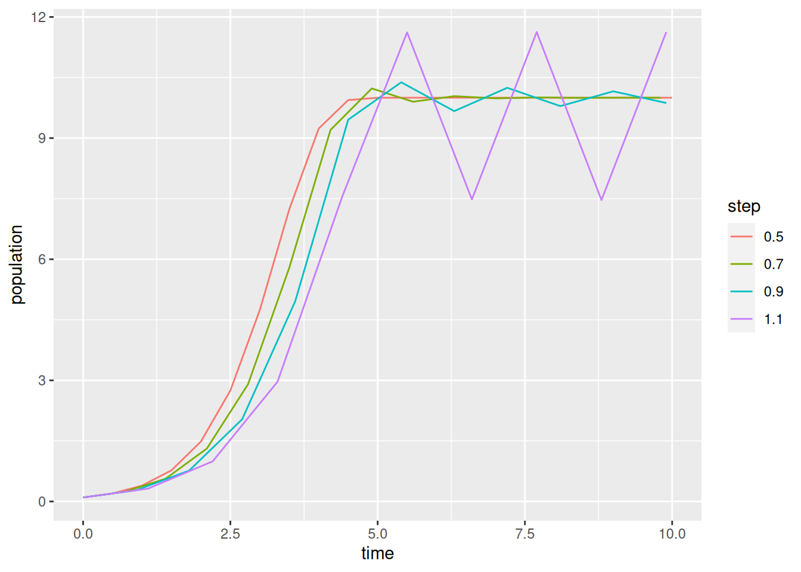

- 1
- intrinsic growth rate (per day)
- 2
- carrying capacity (some measure of biomass, e.g., thousands of individuals)
- 3
- initial population size (in the same units as \(K\))
- 4
- number of time units to simulate (days, since we must match the units chosen for \(r\))
Problem 2.1: From Models to Forecasts
Exploring the Discrete Logistic
Using Euler’s Method
Our starting point for forecasting projects is often a ‘classic’ deterministic compartmental model (aka ODE model). Even though these might be simple, we almost always base our forecasts on numerical simulations. This problem set explores a few side-effects of discritizing an ODE model. Along the way we also get to think carefully about the processes modelled by the logistic equation.
Consider the classic logistic ODE model \[\frac{dN}{dt} = rN(1-N/K)\]
This is a phenomenological model. It is a simple, 2-parameter ODE model that produces logistic solutions: with initial conditions, \(N(0)\), between 0 and \(K\), the solution increases monotonically to the carrying capacity, \(K\). The processes behind the carrying capacity are not explicitly modelled, so we view the parameter \(K\) and the logistic term \(N(1-N/K)\) as phenomenological rather than mechanistic, or process-based.
To set up our forecast (i.e., find a solution) we must specify values for parameters, initial conditions, and a stopping time.
At this point we could use a stock (canned) ODE solver from the ‘deSolve’ library. Instead, we’ll build our own discritizations. This let’s us explore a few technicalities and some mechanisms behind the carrying capacity.
The simplest discritization of the ODE model uses Euler’s method (a tangent line approximation) with a time step \(\tau\). \[N(t+\tau) = N(t) + \tau rN(t)(1-N(t)/K)\]
We’ll wrap a single step of the discrete model in a function, using global values for parameters as defaults.
Listing 1: Foward Euler approximation to the Logistic Equation
- 1
- Wrap the model in a function to simplify later loops.
- 2
-
Unwind the optional parameter list. The
with(param,wrapper is a convenient way to pass a parameter list to the function while still having the default option of using globally defined parameters. Ifparam==NULLthe interpreter uses global values ofrandK - 3
-
The model is evaluated inside the
withstatement. - 4
-
close
with - 5
-
close
function
We can make a simple iterator to generate solutions.
stepper = function(f, param=NULL) {
with(param,{
times = seq(0,Tend,by=tau)
n = rep(N0,length(times))
for (t in 2:length(times)){
n[t] = f(n[t-1],param)
}
data.frame(time = times, population = n)
})
}Notice the discrete model has an additional parameter, \(\tau\). Let’s start with \(\tau\) set to 0.5 days (12 hours) and generate a solution.
p$tau = 0.5
res = stepper(logistic_euler,p)
plot(res,type='l')The choice of line segments for the plots is appropriate, since we are viewing our solution as a discrete time approximation, based on tangent lines, to a continuous solution of the ODE model.
Next, we’ll repeat the forecast with a larger time step and use ggplot2 for fancier plots.
library(ggplot2)
res$tau = p$tau # add a column for the step size
data = res
p$tau = 1.0 # change step size
res = stepper(logistic_euler,p)
res$tau = p$tau
data = rbind(data,res)
ggplot(data,aes(x=time,y=population,color=factor(tau))) +
geom_line() +
labs(color="step")To repeat the forecast with several time steps, or multiple parameter sets, we should wrap things up in a loop.
1data = NULL
for (tau in seq(.5,1.1,by=.2)) {
p$tau = tau
res = stepper(logistic_euler,p)
res$tau = tau
2 data = rbind(data,res)
}
ggplot(data,aes(x=time,y=population,color=factor(tau))) +
geom_line() +
labs(color="step")- 1
-
Setting a variable to
NULLis a convenient way to initialize storage space for the results. - 2
-
We can append each forecast to the end of the data frame to get the results in the long format ggplot likes. Use
cbindto set things up for matplot.

Exercise 1 Generate plots of the logistic growth model for each \(r\) in \(\{1.95, 2.05, 2.5, 2.8\}\) using the simple Forward Euler discritization and \(\tau=1\). You should write a script that uses a loop (or apply) to do this. Describe the trajectory observed in each case. Do the solutions remain between 0 and \(K\)? Are the solutions strictly increasing or do they oscillate?
A more logistic-like discrete model
One quick fix to the problem of oscillations in simple Forward Euler discritzation is to use a semi-implicit method. \[N(t+\tau) = N(t) + \tau rN(t)\left(1-\frac{N(t+\tau)}{K}\right)\] Here we limit population growth based on the future population rather than the current population. Solving for \(N(t+\tau)\) yields something similar to a Beverton-Holt discrete model. \[N(t+\tau) = \frac{(1+ \tau r)N(t)}{1+\dfrac{\tau rN(t)}{K}}\]
Exercise 2 Write a function similar to logistic_euler Listing 1 but using the semi-implicit method above. Generate plots from this discritization for the same values of \(r\) as in the previous problem. Vary \(\tau\) to see the effect on solutions.
Exercise 3 Show that if \(r>0\) and \(0 < N(0) < K\) the semi-implicit model produces strictly increasing solutions. Hint, show \(N(t) < N(t+\tau) < K\) provided \(0 < N(0) < K\) and \(r > 0\).
A process-based approach to the logistic model
Dividing the logistic term into separate birth and death terms gives a slightly more process-based definition of a carrying capacity. Suppose births are proportional to population and deaths increase quadratically with population. That is, \[\frac{dN}{dt} = bN - dN -cN^2\] where \(b\) is the per capita birth rate and \(d+cN\) is the per capita mortality rate. The equilibrium population is \(K = \frac{b-d}{c}\) provided \(b > d\). Unlike the usual \(r\)-\(K\) formulation of the logistic model, this model still makes perfect sense if \(b < d\).
A simple semi-implicit discritization that preserves the monotonicity of the logistic solutions and avoids similar numerical instabilities for \(b < d\) is the following: \[N(t+\tau) = N(t) + \tau bN(t) - \tau dN(t+\tau) - \tau cN(t)N(t+\tau)\] \[N(t+\tau) = \frac{ (1 + \tau b)N(t) }{ 1 + \tau d + \tau cN(t) }\]
Exercise 4 Show that if \(b < d\) and \(N(t) > 0\) then \(0 < N(t+\tau) < N(t)\). This guarantees we generate a strictly positive and decreasing sequence of populations consistent with the ODE model. The same isn’t true of the earlier discritizations.
Exercise 5 Show that if \(b > d\) and \(0 < N(t) < K = \frac{b-d}{c}\) then \(N(t) < N(t+\tau) < K\). Again consistent with the ODE model.
Parameter Uncertainty
This section of the problem set is taken (almost) directly from Dietz’s Exercise set 2
Probability distributions in R
Now that we know how to run a model forward, we need a way to incorporate one of the most basic features of what makes a forecast a forecast – that forecasts should use probabilities to incorporate uncertainties.
Because it is a statistical language, there are a large number of probability distributions in R by default and an even larger number that can be loaded from packages. The table below gives a listing of the most common distributions in R, the name of the function within R, and the parameters of the distribution.
| Distribution | R name | Parameters |
|---|---|---|
| beta | beta | shape1, shape2, ncp |
| Binomial | binom | size, prob |
| Cauchy | cauchy | location, scale |
| chi-squared | chisq | df, ncp |
| exponential | exp | rate |
| F | f | df1, df2, ncp |
| gamma | gamma | shape, scale |
| geometric | geom | prob |
| hypergeometric | hyper | m, n, k |
| log-normal | lnorm | meanlog, sdlog |
| logistic | logis | location, scale |
| Negative binomial | nbinom | size, prob |
| Normal | norm | mean, sd |
| Poisson | pois | lambda |
| Student’s t | t | df, ncp |
| uniform | unif | min, max |
| Weibull | weibull | shape, scale |
| Wilcoxon | wilcox | m, n |
There is a good chart at http://www.johndcook.com/distribution_chart.html that describes the relationships among the common distributions, and the Wikipedia articles for most of them are good for quick reference.
R actually provides four related functions for each probability distribution. These functions are called by adding a letter at the beginning of the function name. The variants of each probability distribution are:
- “d” = density: probability density function (PDF)
- “p” = cumulative distribution function (CDF)
- “q” = quantile: calculates the value associated with a specified tail probability, inverse of “p”
- “r” = random: simulates random numbers
The first argument to these functions is the same regardless of the distribution and is x for “d”, q for “p”, p for “q”and n for “r”
All of this will make more sense once we consider a concrete example. Let’s take a look at the normal probability density function first, since it’s the one you’re most familiar with. If you use ?dnorm you’ll see that for many of the function arguments there are default values, specifically mean=0 and sd=1. Therefore if these values are not specified explicitly in the function call R assumes you want a standard Normal distribution.
x = seq(-5,5,by=0.1)
plot(x,dnorm(x),type='l') ## that’s a lowercase “L” for “line”
abline(v=0) ## add a line to indicate the mean (“v” is for “vertical”)
lines(x,dnorm(x,2),col=2) ## try changing the mean (“col” sets the color)
abline(v=2,col=2)
lines(x,dnorm(x,-1,2),col=3) ## try changing the mean and standard dev
abline(v=-1,col=3)This plot of the normal distribution and the effects of varying the parameters in the normal are both probably familiar to you already – changing the mean changes where the distribution is centered while changing the standard deviation changes the spread of the distribution. Next try looking at the CDF of the normal:
plot(x,pnorm(x,0,1),type='l')
abline(v=0)
lines(x,pnorm(x,2,1),col=2)
abline(v=2,col=2)
lines(x,pnorm(x,-1,2),col=3)
abline(v=-1,col=3)Next let’s look at the function qnorm. Since the input to this function is a quantile, the x-values for the plot are restricted to the range [0,1].
p = seq(0,1,by=0.01)
plot(p,qnorm(p,0,1),type='l',ylim=range(x)) # ylim sets the y-axis range
# range returns the min/max as a 2-element vector
abline(h=0) # “h” for “horizontal”
lines(p,qnorm(p,2,1),col=2)
abline(h=2,col=2)
lines(p,qnorm(p,-1,2),col=3)
abline(h=-1,col=3)As you can see, the quantile function is the inverse of the CDF. This function can be used to find the median of the distribution (p = 0.5) or to estimate confidence intervals at any level desired.
qnorm(c(0.025,0.975),0,1) # what width CI is specified by these values?[1] -1.959964 1.959964plot(p,qnorm(p,0,1),type='l',ylim=range(x))
abline(v=c(0.025,0.975),lty=2) # add vertical lines at the CI
abline(h=qnorm(c(0.025,0.975)),lty=2) #add horizontal lines at the threshold valsplot(x,dnorm(x,0,1),type='l') # plot the corresponding pdf
abline(v=qnorm(c(0.025,0.975)),lty=2)Finally, let’s investigate the rnorm function for generating random numbers that have a normal distribution. Here we generate histograms that have a progressively larger sample size and compare that to the actual density of the standard normal.
n = c(10,100,1000,10000) # sequence of sample sizes
for(i in 1:4){ # loop over these sample sizes
hist(rnorm(n[i]),main=n[i],probability=TRUE,breaks=40)
#here breaks defines number of bins in the histogram
lines(x,dnorm(x),col=2)
}One other technical note: like any function in R that generates random output, this example will give different results every time you run it.
This example demonstrates that as the number of random draws from a probability distribution increases, the histogram of those draws provides a better and better approximation of the density itself. We will make use of this fact extensively this semester because – as odd as this may sound now – there are many distributions that are easier to randomly sample from than solve for analytically.
Exercise 6 Choose another probability distribution from the table above and generate graphs of the probability density function, the cumulative distribution function, the quantile function, and a histogram of samples from that distribution.
Monte Carlo Simulation
Most of the figures from the logistic growth example in Chapter 2 included plots of the median trajectory and 95% interval estimates. These summary statistics are a reflection of the fact that the underlying model prediction was a timeseries of probability distributions, rather than a single trajectory. So how do we project a probability distribution through time?
In Chapter 11 we will explore a variety of analytical and numerical approaches to propagating uncertainty, and the trade-offs among them, in much greater detail. Today I wanted to introduce a particularly common and general numerical approach, Monte Carlo simulation. A Monte Carlo method is any algorithm that relys on randomization to approximate a computation. These approaches and other will be discussed in more detail later (e.g. Chapters 5, 11, 13, & 14).
The previous example of approximating the Normal distribution with a histogram of samples from the Normal distribution is a simple illustration of this approach. What makes this approach powerful is that we can transform the samples from a distribution through whatever function we would like and the resulting set of samples is the correct histogram for that transformation. This is important because, by contrast, we cannot transform the summary statistics, such as the mean of the probability distribution, through an arbitrary function because of Jensen’s Inequality.
To illustrate this point, consider the function x^2 and a standard Normal distribution (mean = 0, sd = 1). Now if we ignore Jensen’s Inequality and transform the mean and 95% CI we’d end up with a probability distribution that has a mean of 0^2 = 0, a lower confidence interval of -1.96^2 = 3.84 and an upper confidence interval of 1.96^2 = 3.84. Clearly this can’t be correct, since the upper and lower CI are identical and the lower CI is higher than the mean. By contrast, if we do this transformation numerically
x = rnorm(10000,0,1)
y = x^2
hist(x,main="Original distribution",breaks=40)
abline(v=quantile(x,c(0.025,0.5,0.975)),lty=c(2,1,2),lwd=3,col="orange")
abline(v=mean(x),col="red",lwd=3,lty=3)hist(y,main="Transformed distribution",breaks=40)
abline(v=quantile(y,c(0.025,0.5,0.975)),lty=c(2,1,2),lwd=3,col="orange")
abline(v=mean(y),col="red",lwd=3,lty=3)The Monte Carlo estimate is that the mean is 0.9988875, the median is 0.4574323, and the 95% CI is 0.001046, 5.0408616.
It turns out that this specific transformation (x^2 of a standard Normal), has a well known analytical solution – a Chi-squared distribution with one degee of freedom, so in this case we can compare the numerical approximation with the exact solution. This Chi-squared has a mean of 1, a median of 0.4549364 and a 95% CI of 9.8206912^{-4}, 5.0238862.
Exercise 7 Numerically transform a lognormal(meanlog=0,sdlog=0.5) through sin(x) using Monte Carlo simulation. Include histograms of the original and transformed distributions. Report the mean, median, and 95% CI for both distributions and indicate these values on the histograms.
Parameter error
We next want to use the Monte Carlo approach to account for parameter uncertainty in the logistic growth model
To begin, we need to specify the uncertainty in the model parameters and the size of the simulation
r = 1.0 ## make sure to return r to it's original value
K = 10 ## carrying capacity
n0 = .1 ## initial population size
NT = 30 ## number of time steps to simulate
time = 1:NT
r.sd = 0.2 ## standard deviation on r
K.sd = 1.0 ## standard deviation on K
NE = 1000 ## Ensemble sizeNext, we need to run the Monte Carlo simulation for the logistic. In this case we’ll be running the logistic growth model 1000 times, each time with slightly different parameters. We’ll then store all 1000 trajectories in a matrix. In effect, we’ll be estimating our probability distributions and all of our summary statistics from a sample of time-series, rather than a sample of points as we did in the previous example.
n = matrix(n0,NE,NT) # storage for all simulations
rE = rnorm(NE,r,r.sd) # sample of r
KE = rnorm(NE,K,K.sd) # sample of K
for(i in 1:NE){ # loop over ensemble members
for(t in 2:NT){ # for each ensemble member, simulate throught time
n[i,t] = max(0,n[i,t-1] + rE[i]*n[i,t-1]*(1-n[i,t-1]/KE[i]))
}
}Note that the use of the max function in the simulation above ensures that population extinction events stay at 0, rather than generating negative individuals.
Next we’ll use apply to calculate the median and CI for each time point.
n.stats = apply(n,2,quantile,c(0.025,0.5,0.975))Unfortunately, R doesn’t have a built in function for plotting shaded CI on time-series plots, so we’ll define one. Unlike plot, which just takes x and y as arguments, this function need to take time-series for both the upper (yhi) and lower (ylo) intervals.
ciEnvelope <- function(x,ylo,yhi,col="lightgrey",...){
polygon(cbind(c(x, rev(x), x[1]), c(ylo, rev(yhi),
ylo[1])), border = NA,col=col,...)
}Exercise 8 Plot histograms of the samples of r and K used for the simulation.
Exercise 9 Plot a sample of 10 different trajectories (through time) from your ensemble (on one graph).
Exercise 10 Plot a histogram of your population forecast at time = 15.
Exercise 11 Plot the median trajectory through time. Use ciEnvelope to add a 95% CI (i.e. 2.5% to 97.5%) to the plot. This function need to take time-series for both the upper (yhi) and lower (ylo) intervals.
Initial conditions
The approach for simulating uncertainty in the initial conditions is very similar to the approach used for the parameter uncertainty. As in Chapter 2, we’ll assume that the initial condition is distributed as a lognormal to ensure that we never draw negative values. For this example we’ll assume a standard deviation of 0.6 and an intrinsic growth rate of 0.3
r = 0.3
n0.sd = 0.6
n0s = rlnorm(NE,log(n0),n0.sd)
n = matrix(n0s,NE,NT)
for(i in 1:NE){
for(t in 2:NT){
n[i,t] = max(0,n[i,t-1] + r*n[i,t-1]*(1-n[i,t-1]/K))
}
}Exercise 12 Plot the median and 95% interval.
Exercise 13 Repeat with \(r \in \{1.95, 2.05, and 2.8\}\)